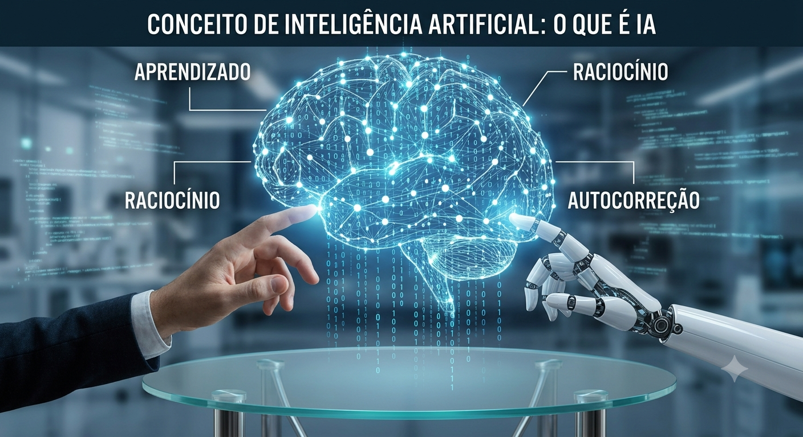
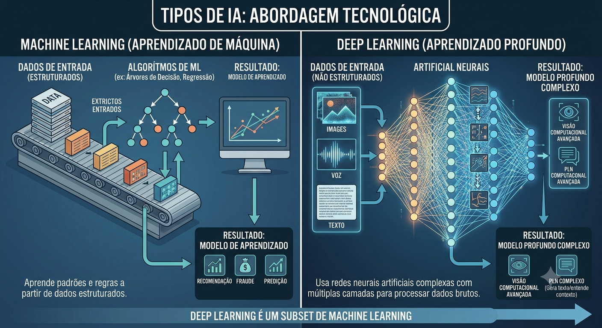
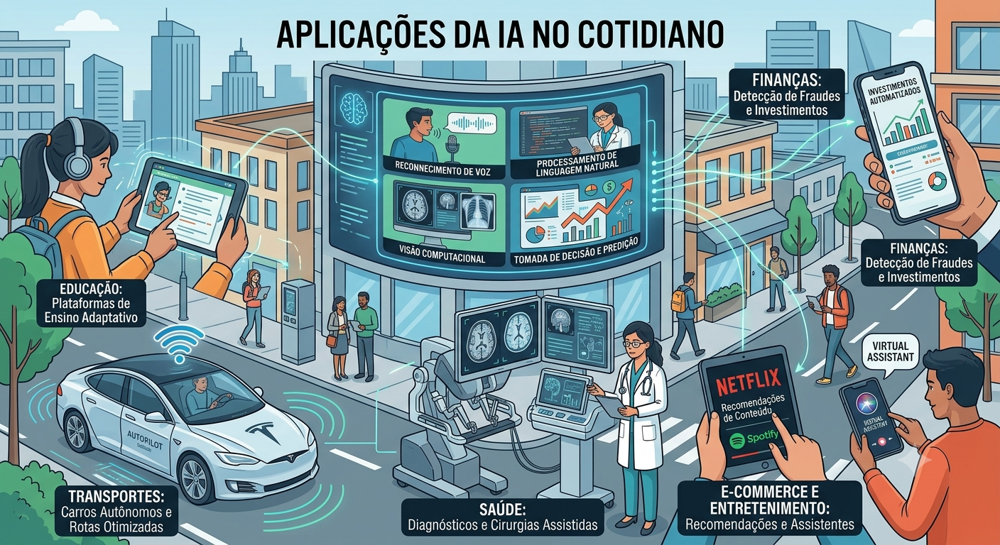
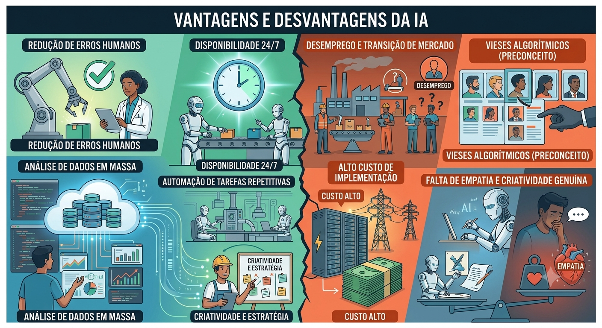

O que é Inteligência Artificial?
De forma simples, a Inteligência Artificial é um campo da ciência da computação que se dedica a criar sistemas capazes de realizar tarefas que, normalmente, exigiriam inteligência humana.
Isso inclui a capacidade de aprender (adquirir informação e regras de uso), raciocinar (usar regras para chegar a conclusões), auto-corrigir e perceber o ambiente ao redor.

Principais Tarefas da IA
Os sistemas de IA são programados para executar uma vasta gama de tarefas, mas as principais incluem:
- Processamento de Linguagem Natural (PLN): Entender, interpretar e gerar a linguagem humana (como os chatbots e tradutores fazem).
- Visão Computacional: Reconhecer e interpretar imagens e vídeos (usado em reconhecimento facial e diagnósticos médicos por imagem).
- Reconhecimento de Voz: Transcrever a fala humana em texto (como a Siri, Alexa ou Google Assistente).
- Tomada de Decisão e Predição: Analisar grandes volumes de dados para prever comportamentos de mercado, tendências climáticas ou sugerir decisões de negócios.
.png)
Tipos Principais de IA
A IA pode ser classificada de duas formas principais: pela sua capacidade (o que consegue fazer) e pela sua tecnologia interna.
Por Capacidade:
- IA Limitada ou Estreita (ANI - Artificial Narrow Intelligence): É a IA que temos hoje. Ela é projetada e treinada para realizar uma tarefa específica extremamente bem (ex: jogar xadrez, recomendar músicas ou dirigir um carro autônomo). Ela não tem consciência fora dessa tarefa.
- IA Geral (AGI - Artificial General Intelligence): Um conceito teórico (ainda não existe). Seria uma IA com capacidade cognitiva semelhante à humana, capaz de aprender, entender e aplicar conhecimentos em qualquer área de forma autônoma.
- Superinteligência (ASI - Artificial Superintelligence): Outro conceito teórico onde a IA ultrapassaria a capacidade intelectual de toda a humanidade combinada.
Por Abordagem Tecnológica:
- Machine Learning (Aprendizado de Máquina): Algoritmos que aprendem a partir de padrões nos dados, sem serem explicitamente programados para isso.
- Deep Learning (Aprendizado Profundo): Uma subárea do Machine Learning que utiliza redes neurais artificiais complexas (inspiradas no cérebro humano) para processar dados não estruturados, como voz e imagem.

Principais Aplicações da IA no Cotidiano
Saúde
Diagnósticos mais rápidos e precisos de exames, descoberta de novos medicamentos e cirurgias assistidas por robôs.Diagnósticos mais rápidos e precisos de exames, descoberta de novos medicamentos e cirurgias assistidas por robôs.
Finanças
Detecção de fraudes em cartões de crédito, análise de risco de crédito e investimentos automatizados.
Transportes
Carros autônomos (como os da Tesla e Waymo) e otimização de rotas de entrega e trânsito (Waze).
E-commerce e Entretenimento
Algoritmos de recomendação da Netflix, Spotify e Amazon, além de assistentes virtuais de atendimento.
Educação
Plataformas de ensino adaptativo que personalizam o ritmo de aprendizado para cada estudante.

Vantagens e Desvantagens da IA
Como toda grande tecnologia, a IA traz grandes promessas, mas também desafios complexos.
Vantagens:
- Redução de Erros Humanos: Máquinas não cansam e, quando bem programadas, realizam tarefas de alta precisão com taxas de erro quase nulas.
- Disponibilidade 24/7: Sistemas de IA podem trabalhar ininterruptamente, sem precisar de pausas, férias ou sono.
- Análise de Dados em Massa: Capacidade de processar bilhões de dados em segundos, algo impossível para cérebros humanos, gerando insights valiosos.
- Automação de Tarefas Repetitivas: Libera os humanos de trabalhos maçantes e burocráticos para focar em tarefas criativas e estratégicas.
Desvantagens:
- Desemprego e Transição de Mercado: A automação rápida de funções pode extinguir postos de trabalho operacionais antes que novos sejam criados.
- Vieses Algorítmicos (Preconceito): Como a IA aprende com dados gerados por humanos, ela pode replicar e amplificar preconceitos de gênero, raça ou classe social presentes nesses dados.
- Alto Custo de Implementação: Desenvolver, treinar e manter sistemas avançados de IA exige investimentos financeiros astronômicos e infraestrutura pesada (chips e energia).
- Falta de Empatia e Criatividade Genuína: A IA simula o comportamento humano extremamente bem, mas não possui sentimentos, consciência, ética intrínseca ou intuição moral.
